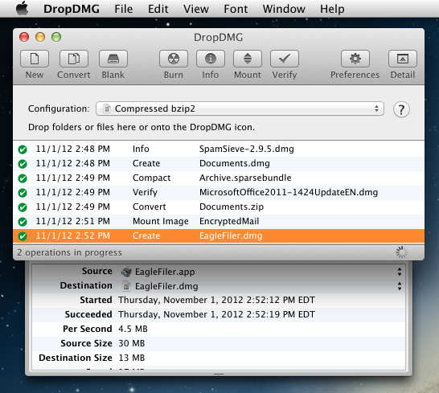

4.3.1 Log Detail
The Show/Hide Log Detail commands control whether the log detail drawer of the DropDMG window is open. The drawer shows additional information about the selected log entry, such as what the source and destination files were, how fast the data was copied, how much disk space was saved, and error information.
DropDMG remembers between launches whether the drawer is open.
A shortcut for Show/Hide Log Detail is to double-click a log entry.

